A mobile app for travellers whose plan already half-collapsed by the time they land.
Local transport info in 60 seconds.
TypeOwn app concept, mobile
RoleUX/UI designer, solo project
TimelineJul–Oct 2026
MethodsAutoethnography, survey (14 people), 3 interviews, persona, journey map, IA, user flow, lo-fi and hi-fi screens, design system
ToolsFigma, FigJam, Claude, Claude Design
What I did
01Wrote an autoethnography, ran a survey and did three interviews
02Found five patterns in what goes wrong when budget travellers arrive
03Designed a five-screen app around one task: getting away from the airport
04Built a small design system and the hi-fi screens
(01)
Context
Imagine you've just landed. You're tired, your carry-on is heavier than you remembered, and you have no idea how to get to your accommodation. You open Google Maps: no bus routes. You check Bolt: €25. You assume that's just how it is here, grab the taxi and move on.
However, there's a public bus for €2.50, and the stop is only a 5-minute walk from the terminal. You just didn't know, and none of the apps told you.
A €25 taxi isn't just money. In the same country where you just spent it on a 15-minute ride, €25 is a bowl of pasta and a glass of wine at a restaurant on the seafront. Budget travel is built on decisions like this. When the expensive option feels like the only option, travellers pay a higher price because nobody told them a cheaper one existed.
Problem statement
Budget travellers arriving at unfamiliar airports consistently overpay for transport.
Finding affordable options takes time, data and local knowledge that most travellers simply don't have at the moment.
(02)
Research approach
The whole project started with my own arrival in Cyprus: the €2.50 bus vs €25 taxi moment. I wrote it up as an autoethnography, a structured version of my own experience treated as research. But I couldn't tell if this was just my problem or something wider. So I set out to find other travellers who'd had something similar, or hadn't.
Survey (14 people)
To find patterns across a bigger group. I shared it through SurveyCircle, Reddit, LinkedIn and anyone I know who travels. Most respondents were based in the EU. It had a mix of multiple-choice and open questions.
Three interviews: Vienna, Tel Aviv, Sardinia
Six open questions each, with flexible follow-ups. I wanted the "why" behind the survey numbers: the small moments and decisions. I tried hard to avoid my own assumptions, and being a traveller myself made that even harder.
Who I spoke to
All three interview participants were in their late 20s to early 30s, from or based in Ukraine, with no kids. The findings are honest to that group. Parents, older travellers, men and travellers from very different backgrounds would likely have different arrival stories. That's future research.
(03)
Research outputs
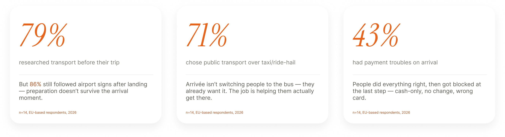
Survey · n=14, EU-based respondents, 2026
The survey showed me numbers, and the interviews showed how it really felt.
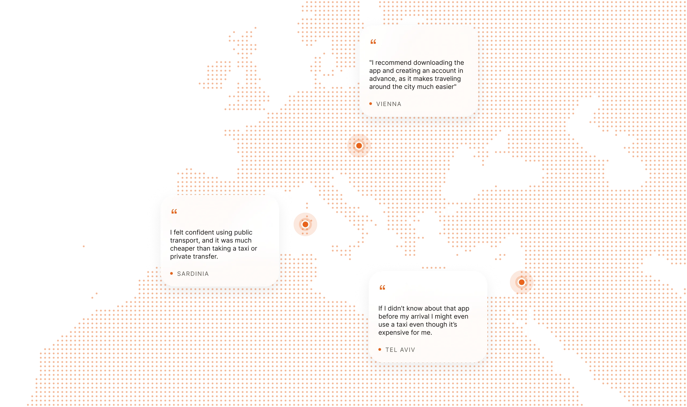
Interviews · Vienna, Sardinia, Tel Aviv
And since the project started with my own arrival, I looked at that one in detail too.
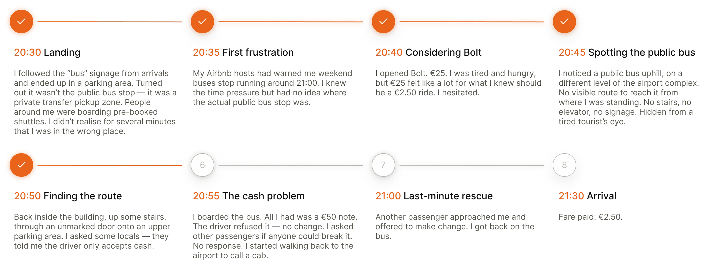
Autoethnography · my arrival in Cyprus, minute by minute
(04)
Meet Sofia
Based on everything above, I wanted to put a human face to the research. Sofia is a composite: mostly built from my Tel Aviv interview and my own Cyprus arrival, with the broader survey patterns mixed in. She's the person whose journey I'll walk through next.
User persona
Sofia
Age
28–32
Location
Europe
Travel style
Solo or with a partner, no kids, doesn't drive by choice
Trips per year
3–5 international, mostly leisure
What she needs
Get to her Airbnb quickly, without paying tourist prices.
Stay in control of the decision, and not fall back on the expensive option because she ran out of energy.
Keep her vacation time for the vacation. In the perfect case, she doesn't lose an hour to logistics.
Her situation
Sofia is an experienced traveller landing at an unfamiliar airport at 8–9pm, right before the Easter holidays. She has just flown for 3 hours and feels tired but still functional. She's done some research beforehand: Google Maps, and a text to her Airbnb hosts asking for directions and the bus number. The hosts also warned her: after 9pm, don't rely on buses.
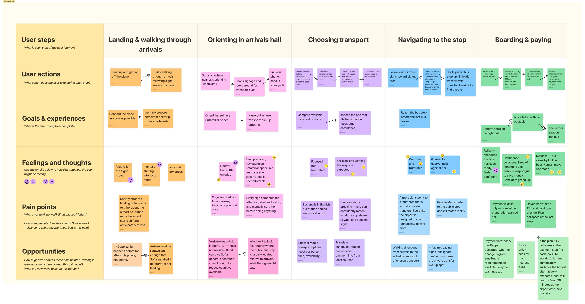
Sofia's user journey map · landing → boarding and paying
(05)
What I found
Five patterns came out of the research, and each one shaped a design decision.
01
Pre-trip research doesn't survive the airport
→ In Arrivée
The app has to work in the first 60 seconds. One source, no signup, it detects your location and loads on bad wifi.
What I found: 11 of 14 people (79%) researched transport before their trip. 12 of 14 (86%) still followed the airport signs after landing.
What it means: People do prepare. They Google, ask locals and install apps. But that preparation is spread across too many sources, and general sources fall apart when you're tired. What survives the arrival moment is specific local knowledge: a friend's app tip, a host's exact bus number. One trusted source beats five scattered ones.
“
I'd love to see some single source where I can find all the needed info instead of Google Maps + ChatGPT + local advice.
“
If I didn't know about that app before my arrival I might even use a taxi, even though it's expensive for me.
02
People honestly weigh all available options
→ In Arrivée
Real numbers (cost per person, time, availability) for every option that works: bus, train, ride-hail, local taxi.
What I found: 10 of 14 people (71%) chose public transport over a taxi or ride-hail. Half called themselves budget-conscious or backpackers.
What it means: People compare options honestly, and they're ready to take a taxi when the maths or the situation changes: late at night, in a group, or when the cheap option feels too uncertain. Even when they take a taxi, they want the cheapest one.
“
I felt confident using public transport, and it was much cheaper than taking a taxi or private transfer.
“
Local taxi apps — cheaper than international apps such as Uber.
03
Payment is the thing that ruins otherwise fine plans
→ In Arrivée
Payment info (cash or card, change, Apple Pay, where the ticket machine is) sits on the main card next to the price, not hidden in the details.
What I found: 6 of 14 people (43%) had payment trouble on arrival. It was the most common missing piece of information in the open answers.
What it means: People who did everything right still get stuck at the payment step, because general sources don't cover small local rules: cash only, no change for a €50 note, Apple Pay not accepted, a broken card machine. When payment fails, people fall back on the expensive option they were trying to avoid.
“
Spent some time to train ticket terminal, but it was operating only with cash or physical bank card (Apple Pay was not working there), so had to call taxi and pay some extra money on top of extra time spent already.
“
That I can't pay with a card in the underground, only cash.
04
Bad arrivals are several failures at once
→ In Arrivée
There's always must be at least one option that works. If the buses have stopped, the app shows the expected taxi price, the nearest 24-hour ATM, and whether the airport has a café where you can wait for the next bus.
What I found: 7 of 14 people (50%) said they spent "a lot of time" figuring out transport. The worst stories had several things going wrong at once.
What it means: Arrivals break when a late arrival, no local cash, no wifi and closed buses all pile up at the same tired moment. Backups (a second app, a friend's tip, another way to pay) prevent that, but only if they match what actually breaks. When they don't, people pay for the expensive option they were trying to avoid.
“
It was too late for public transport, I didn't have my dollars converted to local currency and wifi was too slow to download any local apps. I came up completely unprepared, that was a nightmare.
“
Me and my friend arrived very late, spent a lot of time on the customs, buses didn't work at that time so we had to overpay for a taxi.
05
Language has to be available for everyone
→ In Arrivée
Translation of the data, not just the interface. The local script stays visible where it helps you find your way (station names on signs), and everything else is translated.
What I found: 10 of 14 people (71%) named language as their biggest problem with local transport.
What it means: The real language problem is reading timetables, signs, station names and PDFs that only exist in the local script. Partial translation is worse than none, because it gives false confidence that falls apart at the moment of decision.
“
First it would be nice to have everything translated at least in English.
“
The app itself was in English, but what pissed me off is that some station names were written in Ivrit — I wasn't sure if I'm picking the right one.
(06)
Information architecture and user flow
The next question was what Arrivée actually looks like as a product: enough screens to cover the main flow.
I kept the IA deliberately small, with five screens. The whole idea is "60 seconds, one clear answer", and a bigger IA would have worked against that.
The user flow walks Sofia through what the screens actually do when she opens the app.
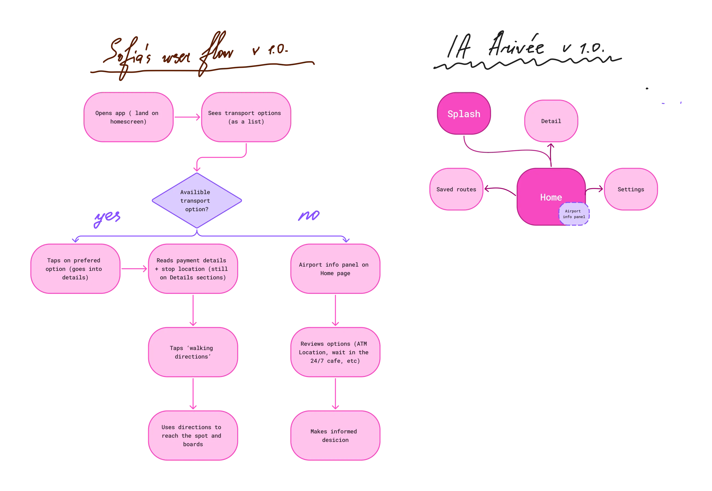
User flow and IA v1.0 · FigJam
(07)
Lo-fi sketches
Following the IA, I sketched some lo-fi screens in my notes on iPad. I kept the UI simple on purpose, because the whole app is built around one thing: a user successfully completing the task they came for.
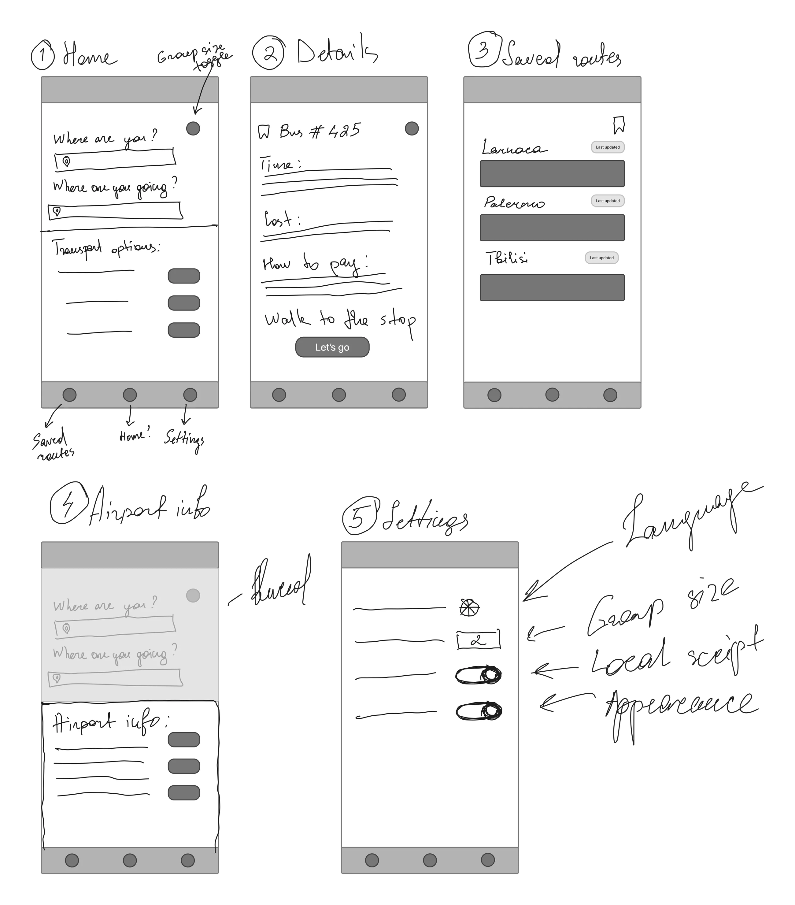
Home · Details · Saved routes · Airport info · Settings
(08)
Design system
Moving to hi-fi was the part I was most excited about. To make my work easier, I built a small design system first: colours, typography and some reusable components.
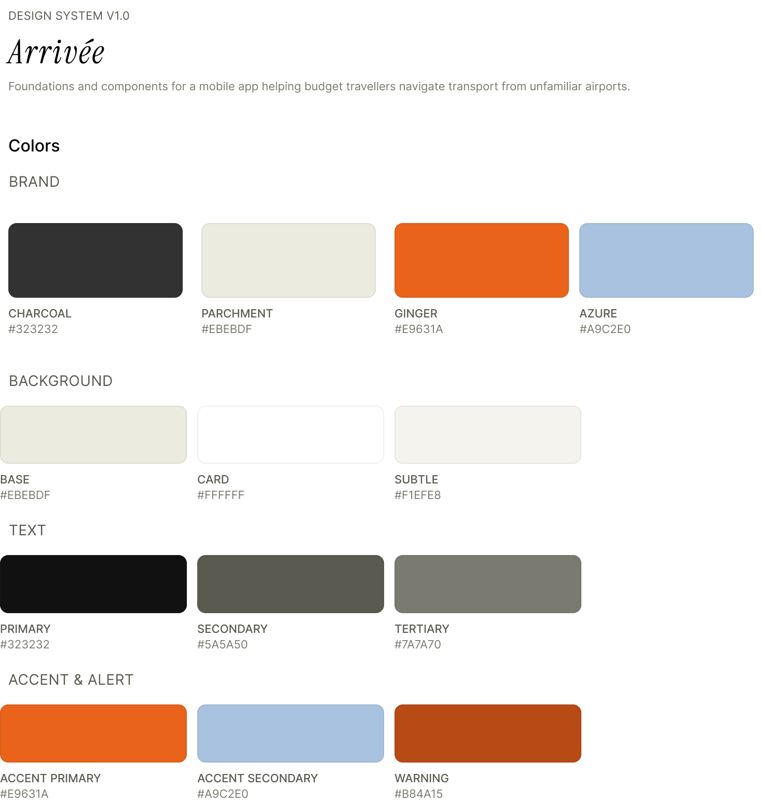
Colours
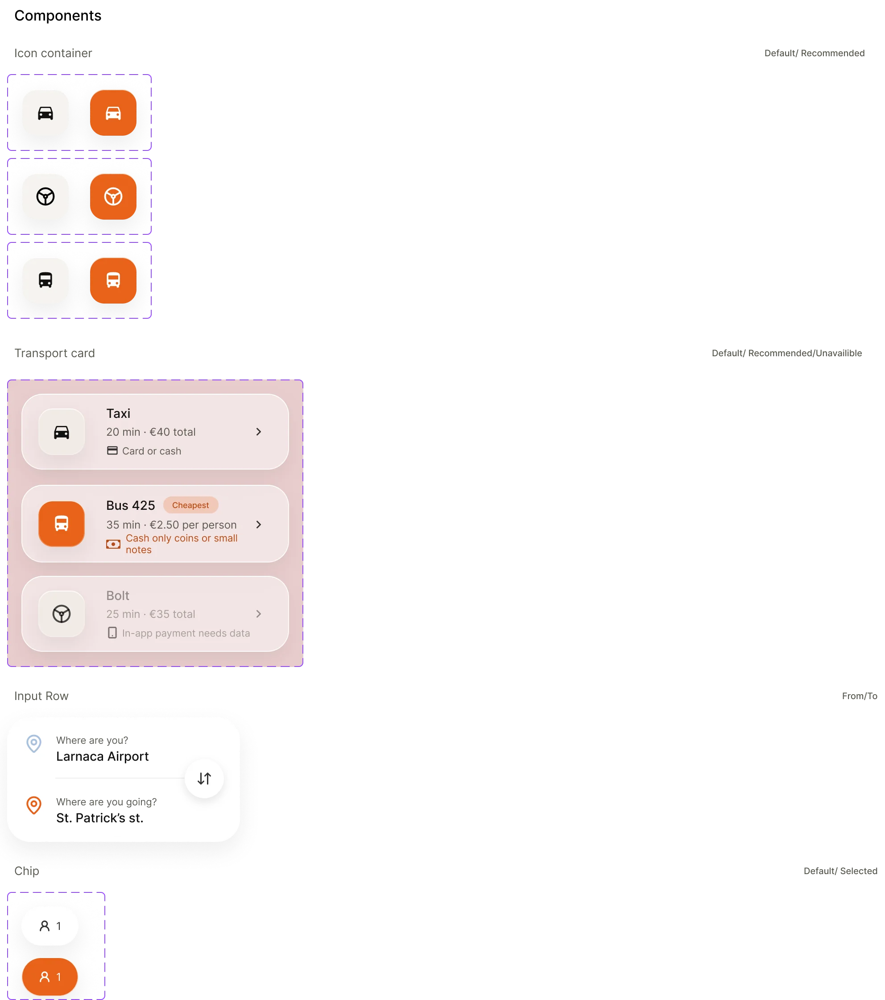
Components
Two accent colours. Electric Ginger is the main one, for buttons, active states and warnings. Azure Mist is the quieter supporting one.
Accessibility. I checked the colours for WCAG AA contrast on the cream background.
Components. Transport cards, input rows, chips and a nav pill. Building them once meant I could change my mind faster across all the screens.
Liquid glass look. Translucent cards with a soft blur behind them. I didn't want the app to look flat and outdated.
Where I messed up
On my first try, the azure accent was way too loud. The group size chip and the small info cues were all fighting the ginger for attention, so you couldn't tell what was actually important. The background was also too bright: pretty, but kind of overwhelming.
I knew something felt off but couldn't say exactly what. So I asked a friend who's been working in UX/UI for two years. She was honest: the colours were competing, the background was too loud and the typography was all over the place. I pulled azure back to a quieter role, calmed the background down and tightened the typography, and the screens finally made sense.
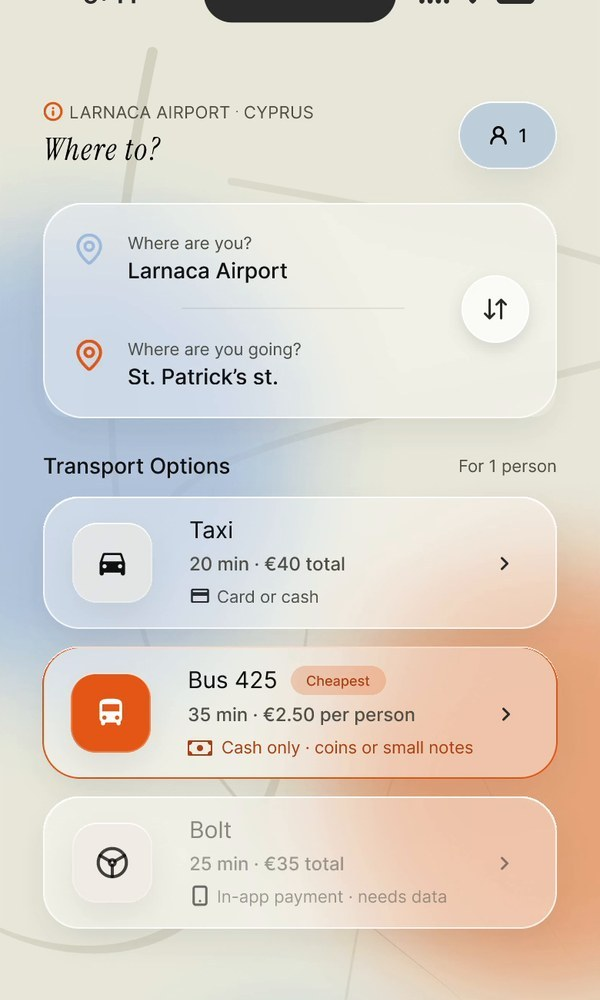
Before · first version
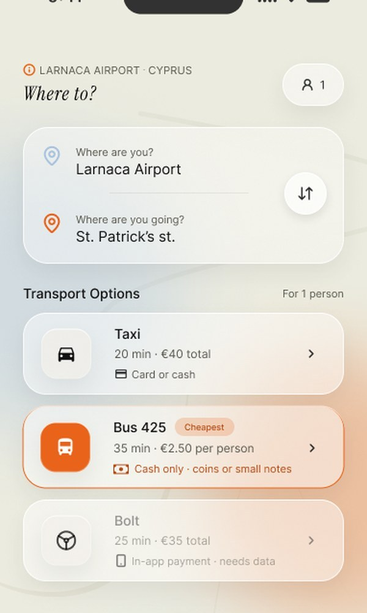
After · final
(09)
Hi-fi screens
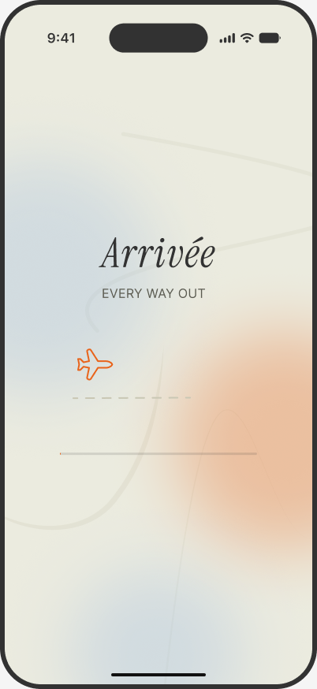
SplashArrivée. Every way out.
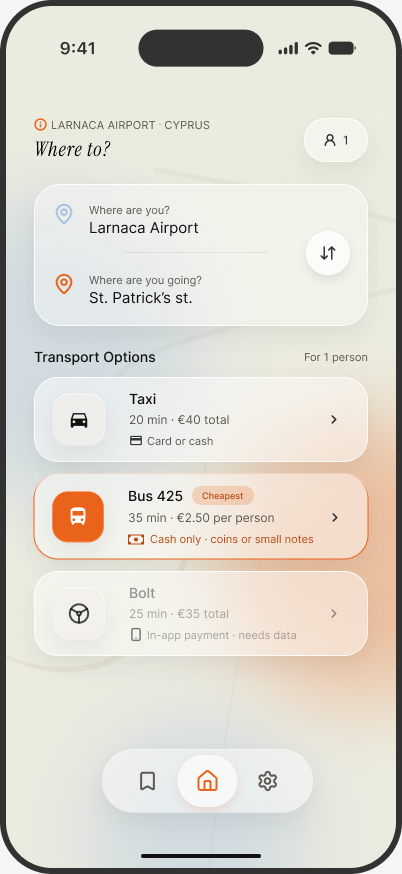
Home · Findings 02, 03Every option side by side, with time, price and how to pay right on the card. The cheapest is marked, but nothing is pushed.
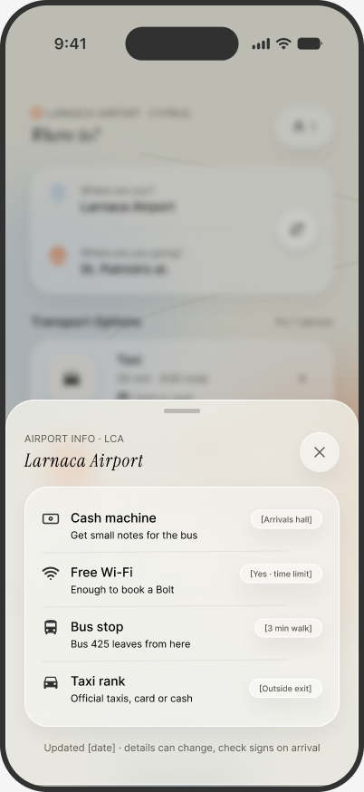
Airport info · Finding 04When nothing fits, there's still a next step: cash machine, wifi, bus stop and taxi rank.
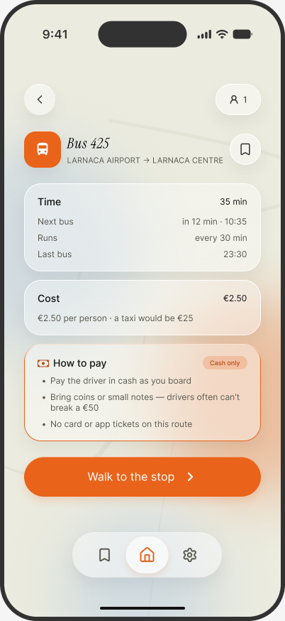
Details · Finding 03Next and last bus, the cost next to a taxi, and how to pay: cash only, bring small notes.
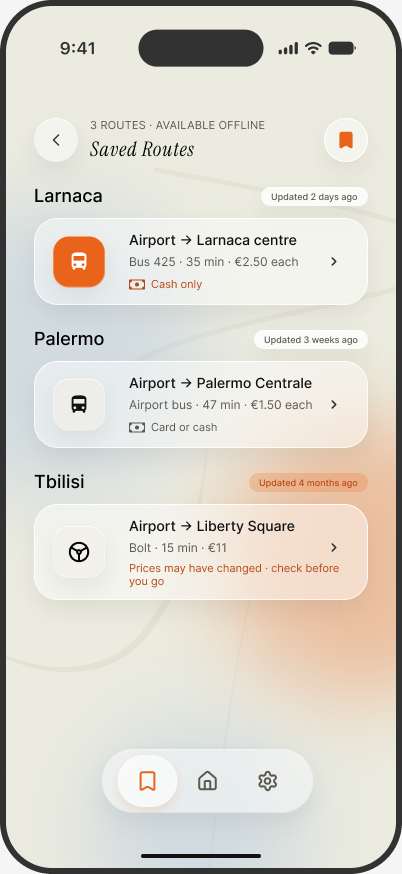
Saved routes · Findings 01, 04Available offline, with a warning when prices may have changed.
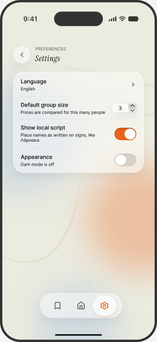
Settings · Finding 05"Show local script" keeps place names as written on signs, like Λάρνακα.
(10)
Reflection
The biggest gap: no usability testing
I didn't test the finished design. The hi-fi screens look good and the user flow makes sense on paper, but I don't have evidence that Sofia, or anyone, can actually complete the main task without friction. For a product whose whole idea is "60 seconds, one clear answer", that's a real limitation. My next step would be a small round of moderated tests with 3–5 people, to see where the design actually breaks.
A small interview group
All three participants were in their late 20s to early 30s, from or based in Ukraine, with no kids. If I took Arrivée further, I'd widen it: parents travelling with children, older travellers, men (whose airport taxi experience is often different from women's) and people from non-Western backgrounds. Each group likely has arrival stories my research can't speak to.
What I learned
Design is about iteration, and about being willing to look at a pile of finished work and tear it up for a better hypothesis.
The design process is a hell of a lot of work. With no commercial experience and no team to bounce ideas off, this project isn't perfect, and it never will be. However, i still learned something. I got frustrated and redid the work at every step again and again.